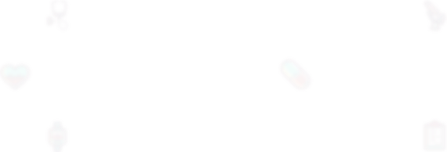

<!DOCTYPE html><html lang="en"><head><title>FHIR.ru</title><meta charset="utf-8"><link rel="stylesheet" href="https://cdnjs.cloudflare.com/ajax/libs/normalize/3.0.3/normalize.min.css"><link rel="stylesheet" href="https://maxcdn.bootstrapcdn.com/bootstrap/3.3.6/css/bootstrap.min.css" integrity="sha384-1q8mTJOASx8j1Au+a5WDVnPi2lkFfwwEAa8hDDdjZlpLegxhjVME1fgjWPGmkzs7" crossorigin="anonymous"><link rel="stylesheet" href="https://maxcdn.bootstrapcdn.com/font-awesome/4.4.0/css/font-awesome.min.css"><link rel="stylesheet" href="css/vendor/animate.min.css"><link rel="stylesheet" href="css/style.min.css"></head><body></body></html><div id="load_screen"><div id="loading"></div></div><div id="intro" class="intro"><div class="container"><div class="parallax"><div class="container"><div id="bg" data-stellar-background-ratio="0.5"><div id="scene"><div id="l1" data-depth="0.40" class="layer"></div><div id="l2" data-depth="0.80" class="layer"></div></div></div></div></div><div class="header"><div class="container"><div class="row"> <div class="col-md-4"><div class="logo-container"><p class="rus">Россия</p></div></div><div class="col-md-8"><nav><ul><li><a href="#community">Команда FHIR</a></li><li><a href="#hl7russia">HL7 Россия</a></li><li><a href="#projects">Проекты</a></li></ul></nav></div></div></div></div><div class="row"><div class="col-md-8 col-md-offset-2"><p class="intro-text text-muted text-center">HL7® Fast Healthcare Interoperability Resources® <br>(Ресурсы Обмена Медицинской Информацией)<p class="intro-btext">Основным структурным элементом стандарта FHIR® является "ресурс". Для облегчения понимания можно провести аналогию между FHIR-ресурсами и бланками документов для записи клинической и административной информации, которую можно зафиксировать и совместно использовать. Стандарт FHIR® определяет общий шаблон для каждого типа клинической информации: один для аллергии, один для медицинских предписаний, один для медицинских направлений и т. п.</p></p></div></div><div class="row"><div class="intro-buttons"><div class="col-md-12"><a href="http://fhir-ru.github.io/overview-dev.html" target="_blank" class="btn btn-default btn-lg">Введение для разработчиков</a><a href="http://fhir-ru.github.io/overview-clinical.html" target="_blank" class="btn btn-default btn-lg">Введение для медицинских работников</a></div></div></div></div></div><div class="persons"><div class="container"><div class="row"><a name="community"></a><h5 class="text-title pull-left">Редакционная команда HL7® FHIR®</h5><a href="http://fhir-ru.github.io/credits.html" target="_blank" class="link-title pull-right">Сообщество и благодарности</a></div><div class="row"><div class="col-md-4"><div class="person-box"><div class="media"><a href="#" class="media-left"><div class="core-team">core team</div></a><div class="media-body"><h4 class="media-heading">Грэм Грив</h4><p class="text-mute">Healthcare Interoperability consultant and developer. Chair several HL7 committees and contribute and developer.</p></div></div></div><div class="person-box"><div class="media"><a href="#" class="media-left"><div class="core-team">core team</div></a><div class="media-body"><h4 class="media-heading">Джош Мандел</h4><p class="text-mute">Physician, programmer, and would-be pâtissier/poet. Lead Architect for SMART and would-be Platforms.</p></div></div></div><div class="person-box"><div class="media"><a href="#" class="media-left"></a><div class="media-body"><h4 class="media-heading">Рене Спронк</h4><p class="text-mute">Provision of educational services related to standards for interoperability in healthcare all services to fhir IT.</p></div></div></div></div><div class="col-md-4"><div class="person-box"><div class="media"><a href="#" class="media-left"><div class="core-team">core team</div></a><div class="media-body"><h4 class="media-heading">Ллойд Маккензи</h4><p class="text-mute">Information with architect with globally recognized expertise in HL7 data modeling and design data modeling.</p></div></div></div><div class="person-box"> <div class="media"><a href="#" class="media-left"></a><div class="media-body"><h4 class="media-heading">Джеймс Агню</h4><p class="text-mute">He is heavily involved with HL7 (a healthcare standards body) and heavily involved with leads the HAPI project.</p></div></div></div><div class="person-box"><div class="media"><a href="#" class="media-left"></a><div class="media-body"><h4 class="media-heading">Дэвид Хэй</h4><p class="text-mute">In my self-appointed role as 'FHIR evangelist' ('FHIR Fanatic') at Orion Health and HL7 New Zealand.</p></div></div></div></div><div class="col-md-4"><div class="person-box"><div class="media"><a href="#" class="media-left"><div class="core-team">core team</div></a><div class="media-body"><h4 class="media-heading">Эвут Крамер</h4><p class="text-mute">Architect and software engineer. Consultancy and coaching for teams modelling and messaging.</p></div></div></div><div class="person-box"><div class="media"><a href="#" class="media-left"></a><div class="media-body"><h4 class="media-heading">Брайан Постлетвэйт</h4><p class="text-mute">Through the years of experience in the many different environments, I have gained extensive knowledge in how.</p></div></div></div><div class="person-box"><div class="media"><a href="#" class="media-left"></a><div class="media-body"><h4 class="media-heading">Вьет Нгуен</h4><p class="text-mute">Internist, pediatrician, clinical informaticist. CMIO @ Systems Made Simple. Amateur photographer/chef.</p></div></div></div></div></div></div></div><div class="video-intro"><div class="container"><div class="row"><div class="col-md-4"><iframe src="https://player.vimeo.com/video/106255531?byline=0&amp;portrait=0" width="370" height="210" frameborder="0" webkitallowfullscreen mozallowfullscreen allowfullscreen class="img-rounded"></iframe></div><div class="col-md-4"><iframe src="https://player.vimeo.com/video/146477763?byline=0&amp;portrait=0" width="370" height="210" frameborder="0" webkitallowfullscreen mozallowfullscreen allowfullscreen class="img-rounded"></iframe></div><div class="col-md-4"><iframe src="https://player.vimeo.com/video/112791998?byline=0&amp;portrait=0" width="370" height="210" frameborder="0" webkitallowfullscreen mozallowfullscreen allowfullscreen class="img-rounded"></iframe></div></div></div></div><div id="blog" data-stellar-background-ratio="0.5" class="blogs"><div class="container"><div class="row"><h5 class="text-title">Блоги о FHIR®</h5></div><div class="row">     <div class="col-md-4"><div class="blog-box"><a href="http://www.healthintersections.com.au/" target="_blank" class="blog-header">Health Intersections</a><p class="text-muted">Блог Грэхема Грива, создателя FHIR®          </p></div><div class="blog-box"><a href="http://thefhirplace.com/" target="_blank" class="blog-header">The Fhirplace</a><p class="text-muted">Блог Эвута Крамера</p></div></div><div class="col-md-4"><div class="blog-box"><a href="http://fhirblog.com/" target="_blank" class="blog-header">Hay on FHIR</a><p class="text-muted">Блог Дэвида Хэя</p></div><div class="blog-box"><a href="http://healthcaresecprivacy.blogspot.com/search?q=FHIR&amp;max-results=20&amp;by-date=true" target="_blank" class="blog-header">Healthcare Security/Privacy</a><p class="text-muted">Блог Джона Моерке</p></div></div><div class="col-md-4"><div class="blog-box"><a href="http://motorcycleguy.blogspot.com.au/search/label/FHIR" target="_blank" class="blog-header">Healthcare Standards</a><p class="text-muted">Блог Кейта Буна</p></div><div class="blog-box"><a href="http://www.fhir-biztalk.com/" target="_blank" class="blog-header">BizTalk on FHIR</a><p class="text-muted">Блог Говарда Эдидина</p></div></div></div></div></div><div class="persons-ru"><div class="container"><div class="row"><h5 class="text-title">HL7® в России</h5></div><div class="row"><div class="col-md-6"><p class="text-muted personru-btext">В 2009 году была создана некоммерческая организация Развития и стандартизации обмена, управления и интеграции электронной медицинской информации «ЗУС «Евразия». В её создании приняли участие Российский национальный исследовательский медицинский университет им. Н.И. Пирогова и ведущие государственные и частные структуры, работающие в сфере информационных технологий в здравоохранении (НПЦ ЭМП Департамента здравоохранения города Москвы, Департамент информационных </p><div class="personru-box"><div class="media"><a href="#" class="media-left"></a><div class="media-body"><h4 class="media-heading">Швырев Сергей Леонидович</h4><p class="text-muted">Президент HL7 РОССИЯ</p><p><a href="http://www.hl7.org.ru/" target="_blank">HL7 РОССИЯ</a></p></div></div></div><div class="row"><h5 class="second-title text-title">HL7® FHIR® в России</h5></div><p class="text-muted personru-btext">В разработке и продвижении стандарта HL7® FHIR® в России участвует российская команда Health Samurai, являющаяся членом организации "HL7 Россия". Health Samurai принимает участие в проводимых HL7® конференциях по FHIR® и оказывает консультирование в области практического использования стандарта HL7® FHIR® при разработке медицинских информационных систем.</p><div class="personru-box"><div class="media"><a href="#" class="media-left"></a><div class="media-body"><h4 class="media-heading">Николай Рыжиков</h4><p class="text-muted">Лидер команды </p><p><a href="https://healthsamurai.aidbox.io/#/" target="_blank">Health Samurai</a></p></div></div><div class="personru-box"><div class="media"><a href="#" class="media-left"></a><div class="media-body"><h4 class="media-heading">Александра Павлышина</h4><p class="text-muted">Инженер-программист, переводчик</p><p><a href="https://healthsamurai.aidbox.io/#/" target="_blank">Health Samurai</a></p></div></div></div></div></div><div class="col-md-6"><a class="twitter-timeline" href="https://twitter.com/health_samurai" data-widget-id="671327959983202304">Твиты от @health_samurai</a>
<script>!function(d,s,id){var js,fjs=d.getElementsByTagName(s)[0],p=/^http:/.test(d.location)?'http':'https';if(!d.getElementById(id)){js=d.createElement(s);js.id=id;js.src=p+"://platform.twitter.com/widgets.js";fjs.parentNode.insertBefore(js,fjs);}}(document,"script","twitter-wjs");</script></div></div></div></div><div id="project" data-stellar-background-ratio="0.5" class="projects"><div class="container"><div class="row"><h5 class="text-title">Российские пионерские проекты, использующие стандарт HL7® FHIR®</h5></div><div class="row"><div class="col-md-4"><div class="prj-box"><div class="prj-link"><a href="http://netrika.ru/solution/health#solutions" target="_blank">Компонент "Обмен данными лабораторных исследований: интеграция МИС-ЛИС" комплексной интеграционной платформы N3.Здравоохранение</a></div><div class="prj-description"><p>Исполнители: <a href="http://netrika.ru/" target="_blank">"Нетрика"</a> и <a href="https://healthsamurai.aidbox.io/#/" target="_blank">"Health Samurai".  </a> Проект выполнен на базе <a href="http://fhirbase.github.io/" target="_blank">FHIRbase.</a></p></div></div></div><div class="col-md-4"><div class="prj-box"><div class="prj-link"><a href="http://mo.nsi.spbmiac.ru/" target="_blank">Система управления реестром медицинских организаций Cанкт-Петербурга</a></div><div class="prj-description"><p>Исполнители: <a href="http://netrika.ru/" target="_blank">"Нетрика"</a>, <a href="http://spbmiac.ru/" target="_blank">СПб ГБУЗ МИАЦ</a> и <a href="https://healthsamurai.aidbox.io/#/" target="_blank">"Health Samurai".   </a> Проект выполнен на базе <a href="https://aidbox.io/landing.html#/" target="_blank">Aidbox.</a></p></div></div></div><div class="col-md-4"><div class="prj-box"><div class="prj-link"><a href="http://loinc.nsi.spbmiac.ru/" target="_blank">Справочник лабораторных тестов и справочник лабораторных услуг Санкт-Петербурга</a></div><div class="prj-description"><p>Исполнители: <a href="http://netrika.ru/" target="_blank">"Нетрика"</a>, <a href="http://spbmiac.ru/" target="_blank">СПб ГБУЗ МИАЦ</a> и <a href="https://healthsamurai.aidbox.io/#/" target="_blank">"Health Samurai".</a> Проект выполнен на базе <a href="https://aidbox.io/landing.html#/" target="_blank">Aidbox.</a></p></div></div></div></div>
</div></div><div class="prefooter"><p class="pull-right hs"><span class="links"><a href="https://medium.com/@health_samurai" class="icon-link"><i class="fa fa-medium"></i></a><a href="https://twitter.com/health_samurai" class="icon-link"><i class="fa fa-twitter"></i></a><a href="https://plus.google.com/u/0/106276017181324261891" class="icon-link"><i class="fa fa-google-plus-square"></i></a><a href="http://www.youtube.com/channel/UCcvmljb_iT5zx6cz1mbZmXg/playlists" class="icon-link"><i class="fa fa-youtube"></i></a></span><span class="copyright pseudoline">© 2015 Powered by</span><span class="hs-team pseudoline">Health Samurai Team</span></p><div class="container"><div class="row"></div></div></div><script src="js/vendor/jquery/jquery.min.js"></script><script src="js/vendor/jquery.stellar/jquery.stellar.min.js"></script><script src="js/vendor/parallax/parallax.min.js"></script><script src="js/vendor/wow/wow.min.js"></script><script src="js/main.min.js"></script>